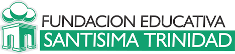

Python
Trabajos2022
En marzo del 2022 comencé un curso de Python denominado "programa CITY"
y dictado por la Fundación Santísima Trinidad. El mismo, tuvo duración de tres meses, con
dos clases online por semana.
En el mismo aprendí los conceptos básicos sobre este lenguaje de programación y
también programación orientada a objetos.
Algunos de los temas abordados fueron tuplas y listas, operadores, controladores de flujo,
funciones, manejo de archivos y datos, clases, objetos, herencia, entre otros.